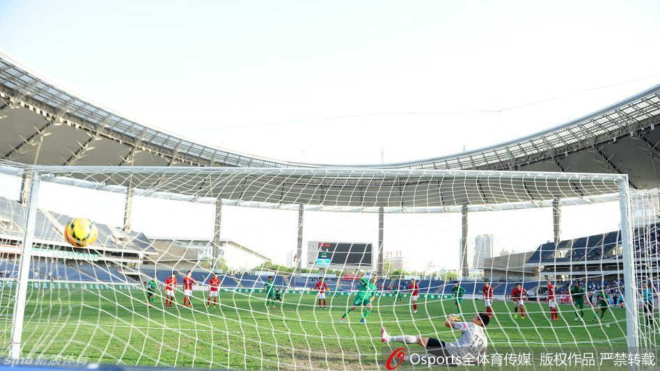

京时间5月13日，2015中国足协杯第三轮赛事继续进行，广州恒大客场对阵中甲球队新疆达坂城纳欢。
比赛进入伤停补时阶段，李帅在禁区内扑倒对方前锋费利佩，被判点球，李帅还因抗议裁判判罚被红牌直接罚出。
上半场临近尾声阶段，新疆队维森特在任意球攻势中头球攻破恒大球门；下半场，恒大队则利用角球机会由张佳祺头球扳平。
新疆队达纳拉赫操刀将点球打进，恒大最终以1-2被淘汰出局。

新疆队达纳拉赫操刀将点球打进，恒大最终以1-2被淘汰出局。